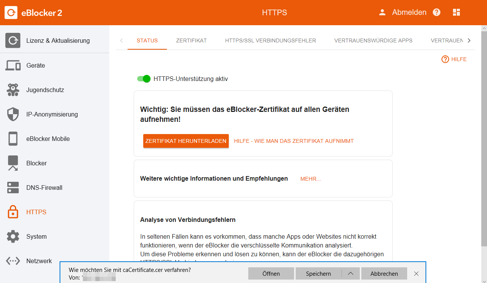
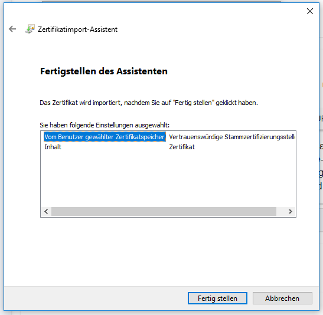

- Gegebenenfalls sehen Sie eine Sicherheitswarnung von Windows. Klicken Sie dort dann bitte auf Öffnen.
- Klicken Sie in dem erscheinenden Fenster auf Zertifikat installieren.

- Es öffnet sich der Zertifikatimport-Assistent.
Hier haben Sie folgende Auswahl:
Aktuelle Benutzer
Lokaler Computer
Der "Aktuelle Benutzer" ist Ihr Windows-Benutzer. Mit der Otion "Lokaler Computer" hinterlegen Sie das eBlocker Zertifikat für alle Benutzer, welche sich bei diesem Windows-Rechner anmelden können.
- Bitte bestätigen Sie Ihre Auswahl mit Weiter.

- Klicken Sie jetzt auf Alle Zertifikate in folgendem Speicher speichern und klicken Sie anschließend auf Durchsuchen.

- Wählen Sie jetzt den zweiten Eintrag Vertrauenswürdige Stammzertifizierungsstelle aus und bestätigen Sie den Vorgang mit OK.

- Im Zertifikatimport-Assistent klicken Sie auf Weiter und anschließend auf Fertig stellen.

- Bestätigen Sie die folgende Sicherheitswarnung mit Ja.
Das eBlocker-Zertifikat ist nun in Windows hinterlegt. Die meisten Browser und Programme können jetzt auf das eBlocker-Zertifikat zugreifen.
Hier eine Auswahl an gängigen Browsern, mit denen Sie die eBlocker Controlbar nun auf HTTPS-Seiten sehen können.
- Microsoft Internet Explorer
- Microsoft Edge
- Google Chrome
- Opera
- Vivaldi
- Yandex
Für folgende Browser und Programme muss das eBlocker-Zertifikat in dem betreffenden, eigenen Zertifikatsspeicher hinterlegt werden.
- Firefox
- Cliqz (basiert auf Firefox)
- Seamonkey
- Thunderbird (E-Mail Programm)